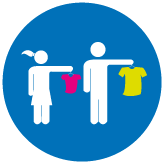
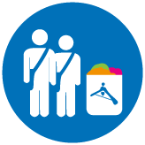
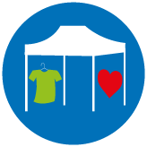
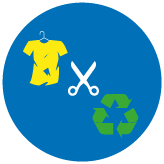

1° Etapa de Recepción domiciliaria:
Consiste en una ruta trazada en la ciudad la que es recorrida por nuestros voluntarios, recepcionando ropa en desuso desde las casas de los usuarios, entregándole así a los
donantes un servicio confiable y personalizado, además de un punto fijo de recepción de donaciones.

2° Etapa de Clasificación:
En el centro de acopio designado por el Municipio local, se separa la ropa en buen y mal estado, seleccionando, clasificando y sanitizando la ropa en buen estado que se destinará a donación. En tanto la ropa en mal estado se apartará para upcycling y reciclaje.

3º Etapa Tienda Móvil:
En esta etapa se llevará a terreno la tienda móvil para donar la ropa en buen estado a beneficiarios designados en conjunto entre el Municipio local y Arropa chile, de manera digna, creativa e innoavora.

4° Etapa Talleres Upcycling:
En esta etapa desarrollamos talleres a cargo de nuestras mentoras a un grupo de jefas de hogar beneficiarias para que a través de los insumos generados de la ropa en desuso en mal estado logren generar nuevos productos para ser comercializados, ayudando de esta manera a que estas jefas de hogar de zonas vulnerables generen una fuente de ingresos a sus hogares, entregándoles herramientas concretas que fomenten el micro emprendimiento y la superación de la pobreza, más allá del asistencialismo.
5° Etapa de comercialización:
En esta etapa se cierra el ciclo , dónde le damos salida comercial a los productos co-creados con nuestras beneficiarias jefas de hogar, productos de upcycling , exclusivos y socio-sustentables.